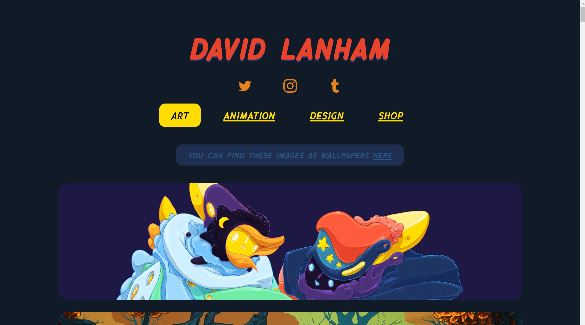

Portfilo Websites

When first seeing this portfilo webpage i was truly stunned. It is very appleaing vidualy and what really works with this website is the color and how it display its bodies of work.
.png)
The organization within the website really works well with this. Showing the aritst main work then having each of their own section for each work, it works very well within sharing the work.
.png)
Even though the artist website was taken from a program that creates the website, i really like the layout of the website. Showing a little display with all of the artist art and having the index on the top left, it is very organzied and i used this aritst website within the layout and how it diaplays a good format and organzation .
.png)
Each of the artist contains a simlarity within the layout and organzation but the color that this artist used really works well. Allowing the colors to blend well and is visualy appleasing which works really well having the colors connect with the artist work and the website.
.png)
The layout stands out the most out of all the other examples. The color and also where each thing is displayed works amazing. The color plays an important role and the way it is displayed works very well with the artist portfilo page. Having a good way to direct the attention to the art, even though it could of organized each of the art in its own section instead of having it all at the same location. Also the information on the top left is very small kinda hard fo rthe viewer to see. But with color this website is a perfect example of connecting art to its webpage